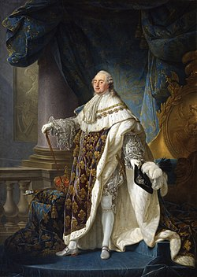
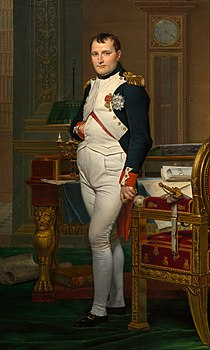

Bár élete nagy részét a középkorban élte le, korszakváltó felfedezése miatt érdemes az újkorhoz sorolni Kolumbusz Kristófot. Magyarországon néhány történész az újkor kezdetét 1490-re, Hunyadi Mátyás halálához tenné, a világban számos tudós pedig Konstantinápoly 1452-es bukásához. Ezek azonban csak szubjektív vélemények, és az egyetemesen elfogadott korszakváltó dátum 1492, amikor is Kolumbusz Kristóf felfedezte az Újvilágot: Az amerikai kontinenst.
1492. augusztus 3-án indult el Palos kikötőjéből Kolumbusz Kristóf három hajója, a Santa Maria, a Nina, a Pinta, hogy az Atlanti-óceánon nyugati felé haladva elérjék Kínát és a Távol-Keletet. Az Amerika felfedezésével végződő expedíció a történelem egyik legjelentősebb utazása volt, mely új szakaszt hozott a portugálok által megkezdett gyarmatosítás folyamatában.
A genovai származású tengerész, Kolumbusz már az 1480-as évek közepétől támogatókat keresett azon tervéhez, hogy nyugat felé hajózva elérje a gazdag fűszertermő vidékeket. Mivel a hajós Lisszabonban telepedett le, ötletével elsősorban II. János királyt próbálta megnyerni magának, de portugál földön csak elutasításra talált. A luzitán hajósok ugyanis ekkor már több évtizede azon dolgoztak, hogy Afrika megkerülésével jussanak el Indiába, ami éppen Kolumbusz feltűnése után hozott sikert: Vasco da Gama 1488-ban elérte a Jóreménység fokát, ahonnan az áhított cél már csak egy ugrásra tűnt. Portugáliának tehát nem állt érdekében a bizonytalan nyugaton kísérletezni, és ezt János 1488-ban egyértelműen Kolumbusz tudtára adta.
A tengerész ekkor a Spanyolországot egyesítő katolikus uralkodókat, Aragóniai Ferdinándot és Kasztíliai Izabellát kereste meg ötletével, de a házaspár nem ígért neki semmi bizonyosat, mert ebben az időszakban elsősorban a Granada elleni háborúval, a reconquistával volt elfoglalva. Szimbolikus jelentőségű is lehet, hogy az expedíció szempontjából sorsdöntő találkozásra éppen Alcázarban, a muszlimok elleni eredményes háborút követően került sor; a katolikus uralkodók a fenti kastélyban fogadták el Kolumbusz kérelmét, admirálisi címmel ruházták fel, és három hajót adtak számára, melyhez a palosi kikötőben gyűjthetett legénységet. A Santa Maria, a Nina és a Pinta, Kolumbusz gyors szervezésének köszönhetően, 1492. augusztus 3-án este elindulhatott az ismeretlen nyugati félteke felfedezésére.
Kolumbusz útja szerencsétlenül indult, egyik hajója sérülés miatt csak a Kanári-szigetekig jutott, így késve indulhatott tovább nyugat felé. Úgy vélte, 4 hét alatt elérheti Kína partjait, azonban nagyot tévedett. Október 12-én ugyanis Kolumbusz megpillantotta San Salvador szigetét, ahol találkozott az őslakosokkal. Úgy vélte, Indiában van, így az itt élőket indiánoknak nevezte el.Az expedíció során a Santa Maria, a Nina és Pinta elhajózott Kuba mellett, mert a szigetet Kolumbusz Kína részének vélte, majd partot ért Hispaniola földjén, ahol az admirális egy 39 fős kolóniát alapított. Kolumbusz 1493 januárjában indult vissza Spanyolországba, nemesfémmel, fűszerrel, ismeretlen növényekkel és indián foglyokkal a fedélzeten.
A királyi udvarban az admirálist szinte hősként fogadták, elhalmozták címekkel és kitüntetésekkel, majd hamarosan egy újabb úttal bízták meg. Kolumbusz Kristóf élete során még három expedíciót szervezett Amerikába, amit egyébként egészen haláláig India és Ázsia földjének hitt. Tévedései dacára a genovai hajós 1492-es útja történelmi jelentőséggel bírt, mivel felfedezéseivel megalapozta a születő spanyol világbirodalmat és az egész világot feltáró földrajzi felfedezések korát.
XVI. Lajos (1754 - 1793)

XVI. Lajos
Franciaország
Tisztség: Király
Lajos Auguste a Versailles-i kastélyban látta meg a napvilágot, születésekor a Berry hercege címet kapta. Lajos Ferdinánd nyolc gyermeke közül a harmadik fiú volt. Édesanyja, Mária Jozefa, III. Ágost szász választófejedelem és lengyel király lánya volt. Lajos erős és egészséges, bár nagyon szégyenlős ifjú volt. Tanulmányait kiváló eredménnyel végezte, tehetsége főként a latin nyelv, a történelem, a földrajz és a csillagászat terén mutatkozott meg, beszélt olaszul és angolul is. Kedvenc időtöltése a barkácsolás volt.
XVI. Lajos Franciaország és Navarra királya volt 1774 és 1791 között, majd 1791-től egy éven keresztül a franciák királya. Bár Lajos király eleinte közkedvelt volt, döntésképtelensége és maradisága miatt a francia társadalom egyes rétegei a zsarnokság jelképének tartották. Manapság a történészek becsületes, jó szándékú embernek írják le, aki azonban képtelen volt a monarchia megreformálására.
1789. július 14-én a felkelő francia nép elfoglalta a Bastille-t, Párizs híres börtönét – ennek híre annyira megijesztette Lajost, hogy az október 5-én lezajlott újabb tüntetés után Versailles-ből családjával (felesége a híres Marie Antoinette, Mária Terézia lánya volt) Párizsba költözött, majd 1791. június 20–21. közötti éjjel Párizsból családjával a hollandi határ felé szökni kényszerült. A nemzetgyűlés június 24-én méltóságától felfüggesztette és mintegy felügyelet alá helyezte – egészen szeptember 14-éig, amikor is Lajos hajlandónak mutatkozott, hogy az időközben teljesen elkészült alkotmányra megesküdjön.
Az 1792. augusztus 20-án megújult lázadó tömeg megtámadta a királyi palotát, ahonnan az uralkodó és családja a nemzetgyűlés termébe menekült, mely azonban a felkelőkkel fogott kezet. Lajost augusztus 18-án a Temple-be zárták és családjától elkülönítették. A döntő szót azonban a törvényhozó gyűlés az 1792. szept. 21-ére egybehívott konventre bízta: ezek először eltörölték a királyságot, és köztársaságot léptetett annak helyébe, majd XVI. Lajost is perbe fogták.
„Capet Lajos” (amint ellenfelei hívták) sorsáról a feldühödött, fegyveres nép döntött: 1793. január 17-én hazaárulás és zsarnokuralom címén halálra ítélték. Január 19-én a halálbüntetés azonnal való végrehajtását határozták el és január 21-én Lajos, a vétkes ősök ártatlan unokája, lefejeztetett. Özvegye, Mária Antoinette 1793. október 16-án követte Lajost a vérpadra; fia, a trónörökös XVII. Lajos tisztázatlan körülmények között, 1795-ben, alig 10 évesen meghalt. A francia forradalom pedig folytatódott egészen addig, míg Bonaparte Napóleon le nem verte a felkelő népet, és megkezdte diktatórikus hatalmának kiépítését (1799). A francia nép időközben elért eredményei pedig – az alkotmányos monarchia, vagy az azt követő köztársasági államrend – nem bizonyultak tartósnak.
Bonaparte Napóleon (1769 - 1821)

Bonaparte Napóleon
Francia Birodalom
Tisztség: Császár
Bonaparte Napóleon 1769-ben látta meg a napvilágot, a korzikai Ajaccióban. Pályafutása alatt bebizonyította, hogy a történelem egyik legnagyobb lángelméje volt. Élete már kortársait is lenyűgözte, halála után pedig a legendák magasságába emelkedett, életéről számtalan könyv készült, melyet még az utókori ellenségei is csodáltak.
Politikai pályafutásának kezdete a francia forradalom időszakához volt köthető. A jakobinus diktatúra alatt irányította a hadsereget, és az 1793-as touloni csata után léptették elő, mellyel elkezdett feljebb lépkedni a ranglétrán. Robespierre 1795-ös bukása után ő verte szét a monarchisták felkelését, így a Direktórium a belföldi erők főparancsnokává nevezték ki őt.
A francia forradalom után a Direktórium konszolidációt akart, de hiába javult a gazdaság, hiába rendeződtek a tulajdonviszonyok Franciaországban, az éveken át egymás ellen uszított politikai csoportok nem adták fel terveiket. Az évente tartott választásokon hol a szélsőjobb, hol pedig a szélsőbal került többségbe. A Direktórium ezért csak fegyveres erővel tudta biztosítani a hatalmát, melynek köszönhetően megnőtt a fegyveres vezetők szerepe, köztük a legnépszerűbb hadvezér szerepe is: Bonaparte Napóleoné. A helyzet odáig fajult, hogy a Direktórium több tagja erős végrehajtó hatalmat követelt, így Napóleon mög álltak, aki 1799-ben éllamcsínyt hajtott végre.
Napóleon új alkotmányt hozott létre, mely biztosította számára a teljhatalmat. Két konzultársával állt a végrehajtó hatalom élén, mint első konzul, ami azt jelentette, náluk szélesebb jogkörrel rendelkezett. Hatalmát a társadalom zöme elfogadta, mert elegük volt a folyamatos belpolitikai viszályokból, békét és nyugalmat akartak. Napóleon 1800-ban létrehozta a Francia Nemzeti Bankot, bevezette a frankot. Az 1804-es polgári törvénykönyve (Code Civil) pedig biztosította a polgári társadalom működését. Egyezményt kötött a pápasággal, megtörtént az állam és az egyház szétválasztása Franciaországban.
Napóleon már hatalomra jutása előtt bizonyította kiváló hadvezetési képességeit (1796-97-es itáliai hadjáratok), egyik fő céljának tekintette a nemzeti dicsőség (gloire) beteljesülését. Napóleon kiválóan alkalmazta a modern harcászat eszközeit, kockázatos pillanatokban maga is részt vett közvetlenül a frontvonalon, beszédeivel motiválta seregét. Legfőbb ellenségének Angliát tekintette. Ez vezette Napóleont arra, hogy Egyiptomban próbálja meg legyőzni az angolokat, mely azonban kudarcba fulladt (1798, Abukir). A hadjáratok hatására az európai nagyhatalmak franciaellenes koalíciókat hoztak létre. Egyiptom után sikeresen legyőzte a koalíció tagjait: 1800, Marengo (osztrákok ellen), 1802, Amiens (angolok ellen)
1804-ben Napóleont császárrá koronázták, a konzulátus lehullott, új arisztokrata réteg alakult ki. Módosult Napóleon politikája. Európai hegemóniára tört és dinasztiát szeretett volna kialakítani. Az európai uralkodók azonban nem fogadták el egyenrangú partnernek Bonapartét, így további franciaellenes koalíciókat hoztak létre. Mindezt azonban sikertelenül tették, hisz Napóleon sorra aratta a győzelmeket felettük: 1805: Austerlitz, 1806: Jéna, 1807: Eylau és Friedland, 1809: Wagram. 1805-ben azonban a trafalgari ütközetben az angol flotta ellen vereséget szenvedett Nelson angol admirálistól. Ez meggátolta Napóleon nagy tervét: az inváziót Nagy-Britannia ellen, melyre válaszlépésként kontinentális blokádot hirdetett az angolokkal szemben, 1806-ban.
Napóleon hadjáratai egyre nagyobb terhet jelentettek Európa lakossága számára. Egyre nagyobb erőket kötött le az ellenállás (pl.: spanyol forradalmak). 1812-ben Napóleon a kontinentális zárlat megszegése miatt háborút indított Oroszország ellen, mely végzetes hibának bizonyult. Az oroszok a "felégetett föld" taktikát alkalmazva csalták a francia seregeket Oroszország szívébe, Moszkva felé, ahol a franciák nem voltak felkészülve a kőkemény orosz télre. Végül Borogyinónál aratott győzelmet a francia császár, azonban a hideg miatt kénytelen volt visszavonulni. Útközben ismét csatát vívott az orosz sereggel a Berezina folyónál, ahol vereséget szenvedett.
Az orosz diadal után újabb franciaellenes koalíció jött létre, és egy hatalmas csatában, 1813-ban, Lipcsénél ("népek csatája") a farncia had hatalmas vereséget szenvedett. 1814-ben a koalíció elfoglalta Párizst, Napóleont lemondatták és száműzték Elba szigetére. 1815-ben azonban visszatért, de Waterloonál vereséget szenvedett, melyet követően Szent Ilona szigetére száműzték, ahol 1821-ben vesztette életét.